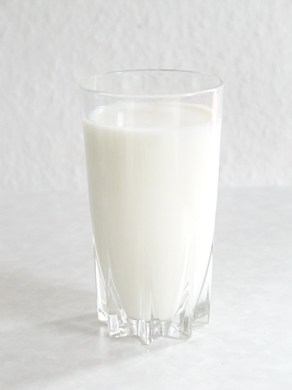

Healthy Foods
- Law-fat or fat-free milk, cheese, and yogurt help you keep in shape:

- Grains oatmeal, corn, brown rice, whole grain bread:
- Lean meats:
Lean meats don't have a huge amount of fat which makes you become heavier.
Fat produces calorie and keep them in your body.
However, too much fat may causes disease -- coronary disease and arteriosclerosis.